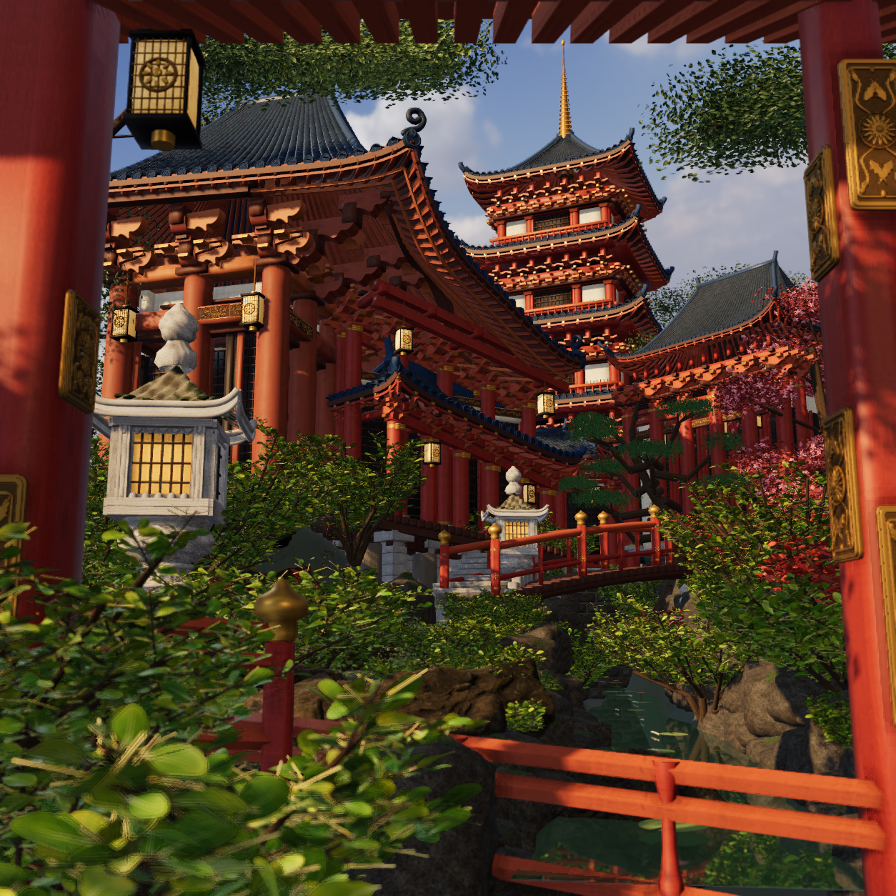
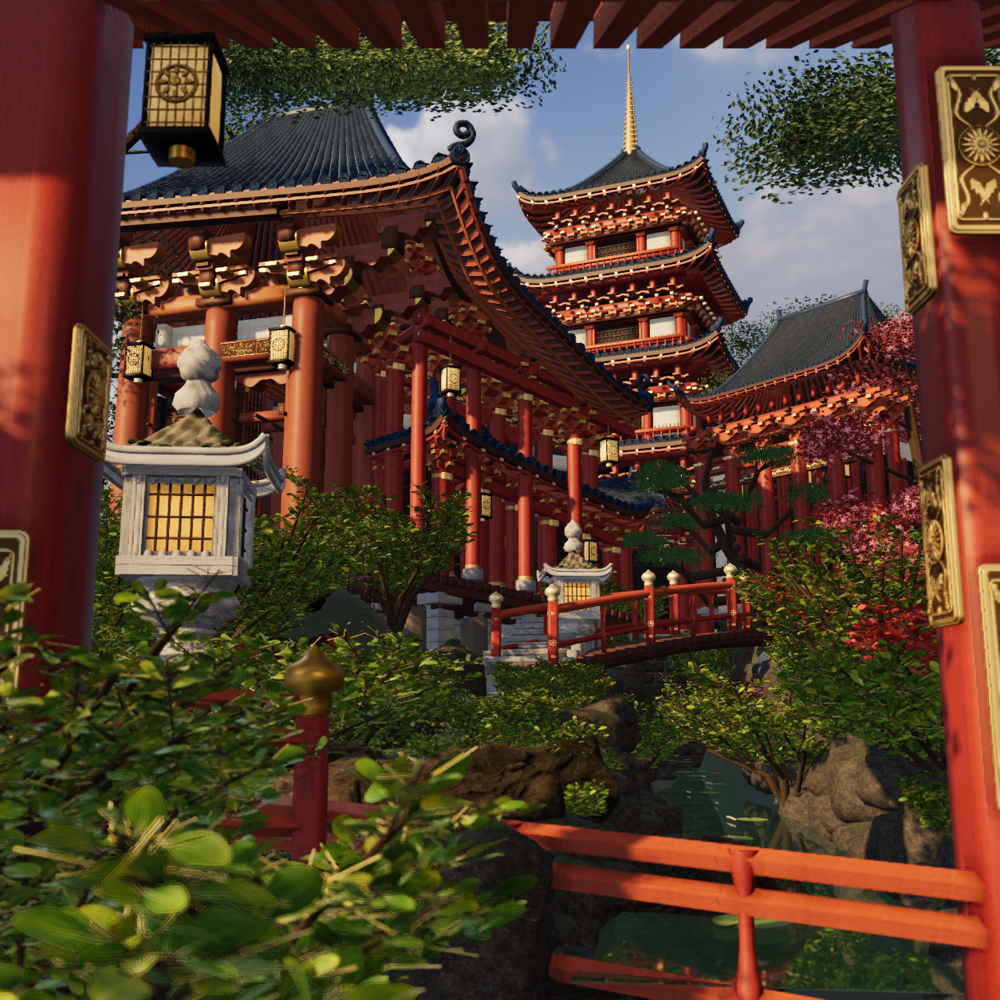
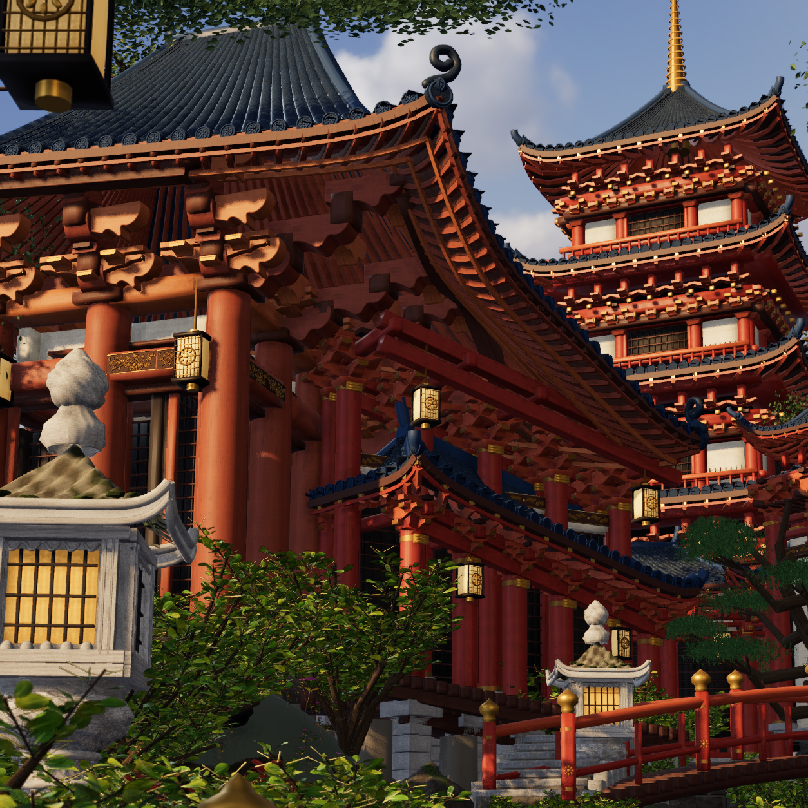
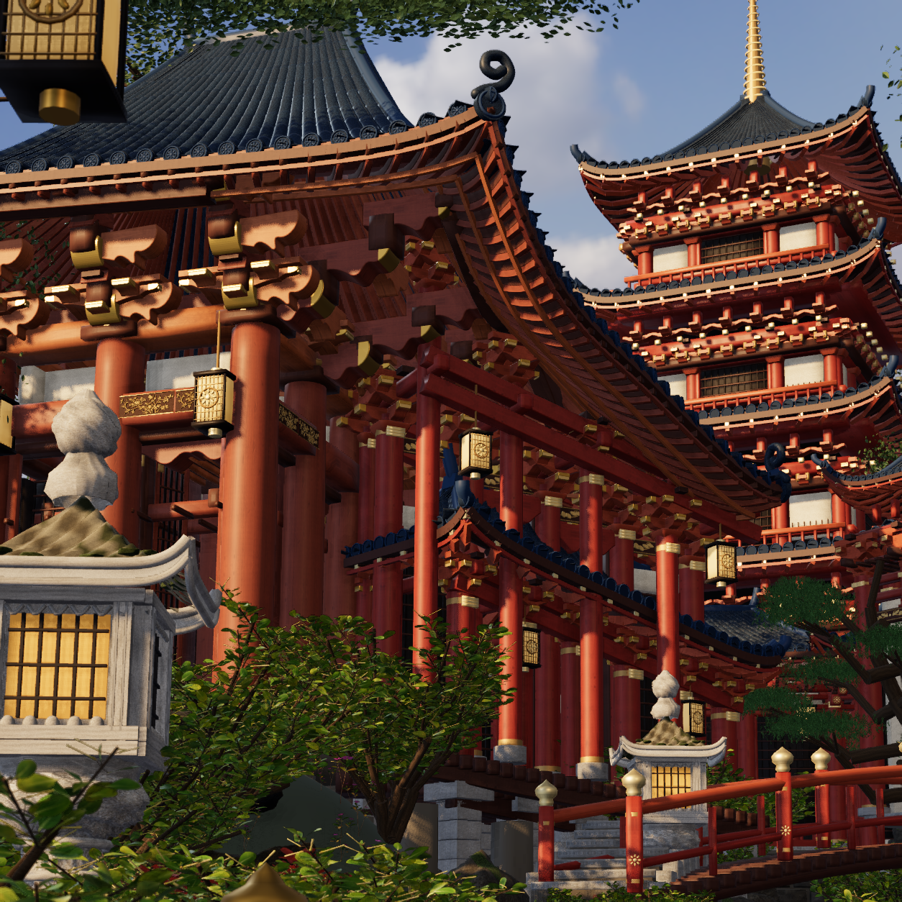
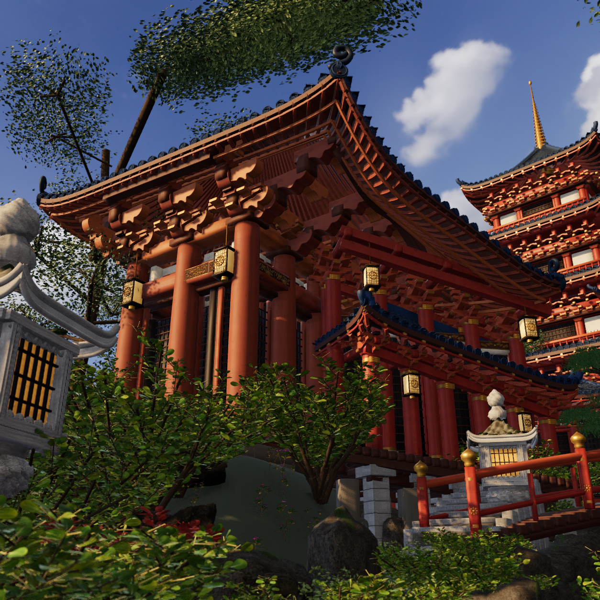
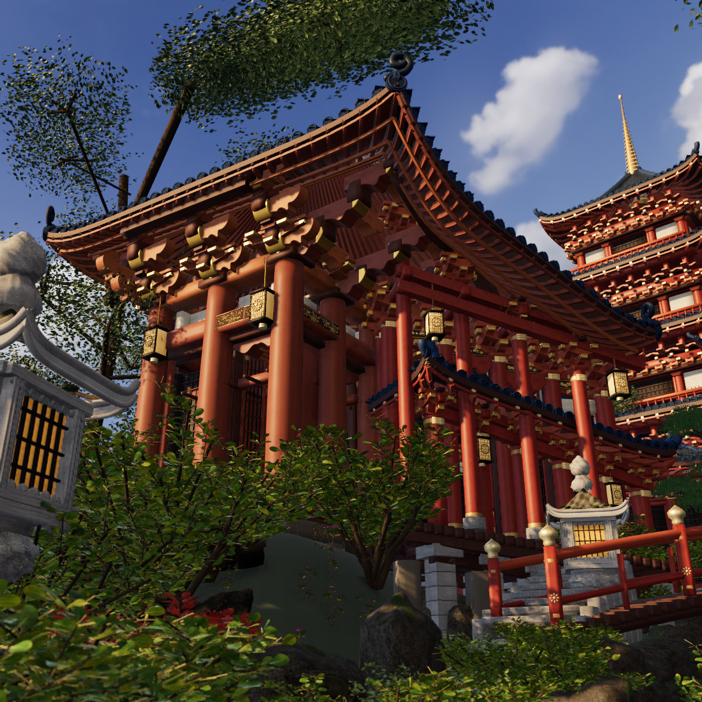

Actual3D checkpoint. Photographic acceptance remains false. Source b5e6804330c4406c557a13a0d4fe4b7a44f51b18a29c1de1855867df3d942fe2,77 inputs. The supplied photograph and genuine native images below have no repainting, added grading or replacement imagery.
Six real portal throats, continuous room carpentry, four actual-roof-queried gallery supports, profile-fitted cast end skins and bounded metal/lacquer/leaf response. The camera, original171 frame/roof receivers, real peony mounts, right hall, bridge, near anchors and garden placement remain held. One native court reflection probe serves selected entry metal; the finial and exposed tower keep the outdoor environment.






The full and hero retain the physical reference camera. The hero is an independent1254 render of the730-source-pixel camera subfrustum at [180,110]. The low structural pose is [1.6,2.2,5.6] looking at [-3,8.2,-8], FOV51.
Roof/corner silhouette and broad bracket profiles remain less precise and less sculpturally specific than the supplied photograph. The stone-lantern/finial profile and erosion, garden leaf morphology/scale and photographic warm indirect-light transport remain visibly different. The actual fitted metal skins are plain compared with the photograph carving; no exact historical or source motif match is claimed. Hidden rooms and carpentry are single-view construction inferences; no claim of surveyed dimensions, complete film or photographic acceptance.